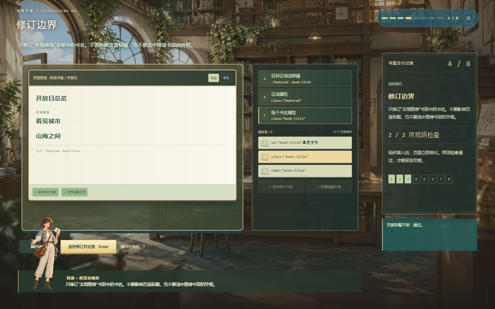
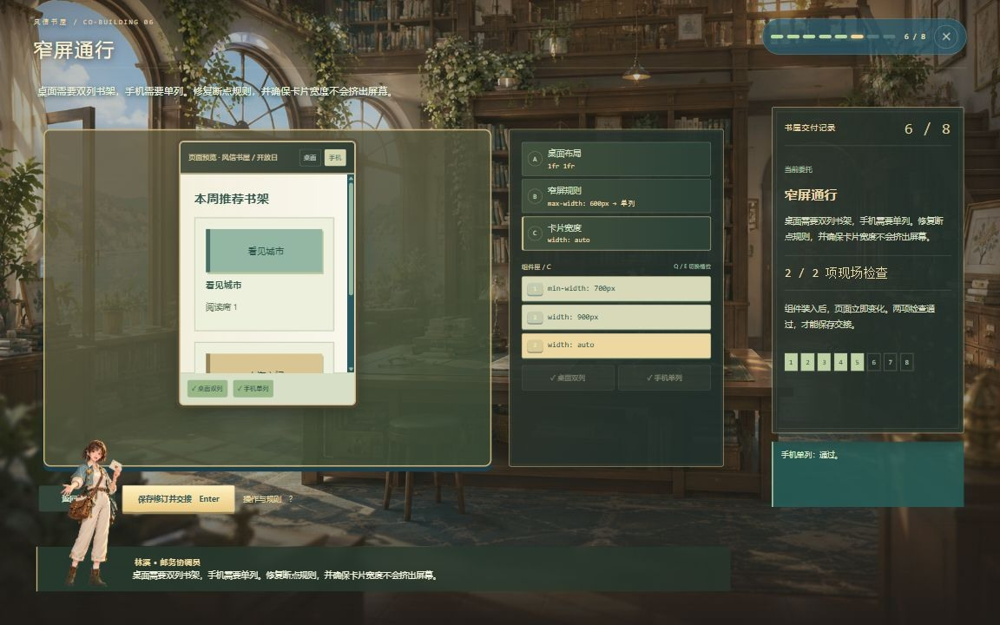

Web Development
I designed 14 core weekly modules that follow a web application from its first browser request to a PHP and MySQL dashboard. The opening module has seven interactive activities, from switching CSS and JavaScript on and off to tracing a request. Six Sunny Isle game stations revisit the early lessons.
Course sequence
Build in the browser
Trace a request and response. Use semantic HTML, responsive CSS, JavaScript events, conditions, and loops to build and test a page.
Program the server
Use PHP types, arrays, functions, and objects to turn a rule into behavior. Compare how subclasses handle the same method call.
Follow a record
Send a form, distinguish GET and POST, and trace what cookies and sessions retain. Connect PHP to MySQL, query records, and handle files and uploads.
Deliver a data application
In the e-commerce capstone, students filter operating records, inspect a detail page, and turn database rows into revenue and conversion charts.
How I teach it
I organize lessons around a change a learner can test. Students predict what a visitor will see, alter one rule, and follow its effect through the page, request, or stored record. In lab activities, students can use AI assistance to write code and complete separate checks without AI.
How a web form becomes a database record
This excerpt from Week 11 compares a valid booking with an incomplete submission. It shows the form data the browser sends, the checks PHP performs, and whether MySQL stores the booking. Other course exercises cover responsive layout, JavaScript events, session state, and querying records for a dashboard.
Complete form
Missing phone
Run a booking or inspect a staff session
Web development / Request lifecycle
Activity registration
Browser
PHP handler
Record store
Inspect the saved records
An English adaptation of the booking workflow from my PHP course. The browser demonstration uses sample data to simulate how PHP validates a form and how MySQL stores a valid booking.
Selected excerpt · Sunny Isle
Three browser and form exercises from Sunny Isle
Try three of the game’s seven repairs. Style the featured titles, fit a shelf onto a phone, and trace a reservation field from the form to the server.
Repair bench
Which titles change?
Apply red ink to both featured titles while preserving the catalogue heading.
Will both books fit?
Keep two columns on a desktop and one on a phone. Switch widths to test your rule.
Where does the name go?
Submit a sample reservation. Inspect which input attribute supplies the field name in the submitted data.
Browser preview
Open day catalogue
The Coastal Path
Inside the classroom game
The English lab above draws on the selector, responsive shelf, and reservation tasks in my original Chinese-language game. Students apply a change and check the resulting page or submitted form data.

